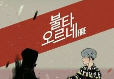
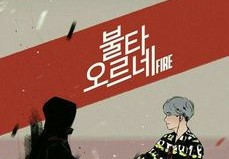
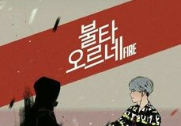
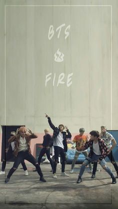
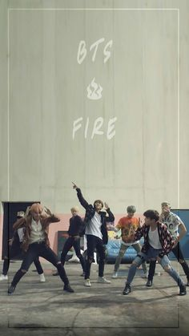

LETRAS -FIRE-
BTS
Propósito del Lyrics:
Principalmente que se diviertan y puedan cantar la canción de este gran anime. Y claro que pueden saber qué significan, es decir, contribuir y facilitar a la comunidad latinoamericana.

Principalmente que se diviertan y puedan cantar la canción de este gran anime. Y claro que pueden saber qué significan, es decir, contribuir y facilitar a la comunidad latinoamericana.
Quemandose
Fuego, fuego, fuego, fuego
Cuando me despierto en mi cuarto (Room), no tengo nada
Después de que se pone el sol, me balanceo mientras camino
Estoy completamente borracho, borracho.
Estoy jurando en las calles
Lo he perdido, estoy como un loco
Todo es un desastre, viviendo como un pitido.
Vive como quieras, es tu vida de todos modos.
Deja de intentarlo, está bien perder
Err'body dice, la-la-la-la-la (La-la-la-la-la)
Di, la-la-la-la-la (La-la-la-la-la)
Levanta las manos, grita, quémalo.
Quemandose
(Ayy, ayy-oh, ayy-oh)
Prende fuego a todo, guau-guau-guau
(Ayy, ayy-oh, ayy-oh)
Prende fuego a todo, guau-guau-guau
Oye (Oye) quémalo (quémalo)
Como si fueras a prenderle fuego a todo
Oye (Oye) quémalo (quémalo)
Hasta que se vaya el amanecer
Está bien simplemente vivir porque todavía somos jóvenes.
¿Quién te crees que eres para decir lo contrario?
Deja de comparar, soy solo un humano, ¿y qué?
Vive como quieras, es tu vida de todos modos.
Deja de intentarlo, está bien perder
Err'body dice, la-la-la-la-la (La-la-la-la-la)
Di, la-la-la-la-la (La-la-la-la-la)
Levanta las manos, grita, quémalo.
Quemandose
(Ayy, ayy-oh, ayy-oh)
Prende fuego a todo, guau-guau-guau
(Ayy, ayy-oh, ayy-oh)
Prende fuego a todo, guau-guau-guau
(Fuego) Todos ustedes con mucho miedo, vengan aquí.
(Fuego) Todos los que estáis sufriendo, venid aquí.
(Fuego) Levanta tus puños, toda la noche
(Fuego) Con pasos de marcha
(Fuego) Salta y vuélvete loco (¡Ay!)
(Caliente, caliente, caliente, más caliente)
Prende fuego a todo, guau-guau-guau
(Caliente, caliente, caliente, más caliente)
Prende fuego a todo, guau-guau-guau
Fuego fuego
(Caliente, caliente, caliente, más caliente)
Prende fuego a todo, guau-guau-guau
Fuego fuego
(Caliente, caliente, caliente, más caliente)
Prende fuego a todo, guau-guau-guau
Te perdonaré
| Canción | Artista |
|---|---|
 Bling-Bang-Bang-Born
Bling-Bang-Bang-Born
|
Creepy Nuts |
 Toca Toca
Toca Toca
|
Fly Project |
 Mic Drop
Mic Drop
|
BTS |

 
